להדפסה: Ctrl/Cmd+P → Save as PDF או הדפסה דו־צדדית
AI Quest · גב־ים נגב
חוברת עבודה לצוות
בונים מודל AI חכם, בטוח ואחראי
كراسة عمل للفريق — نبني نموذج ذكاء اصطناعي ذكيًا وآمنًا ومسؤولًا
שם הצוות: ____________________________
שמות המשתתפים: ______________________
זמן פעילות: 60 / 90 / 135 דקות
מדריך/ה: _____________________________
חוברת אחת לכל צוות · אין צורך בטלפון · עובדים, חוקרים, מסמנים ומקבלים אישור מדריך.
1. סיפור המשימה
ברוכים הבאים ל־AI Quest בפארק גב־ים נגב.
אתם נמצאים עכשיו בתוך פארק הייטק אמיתי, שבו פועלות חברות מתחומים שונים: סייבר, דאטה, ענן, חומרה, תוכנה, תוכן, תקשורת, בריאות, ביטחון ויזמות.
בפארק הופעל מודל AI ניסיוני שנועד לעזור לפתור בעיה אמיתית שהוגדרה למשימה שלכם. אבל יש בעיה: המודל עדיין לא מספיק טוב. חסרים לו מידע איכותי, אבטחה, הבנת משתמשים, תשתיות חזקות, פרטיות ובקרה אנושית.
המשימה שלכם היא לצאת לפארק בצוותים, למצוא חברות, לצלם את הלוגו שלהן, לענות על שאלות, להבין מה כל חברה עושה, ולאסוף ממנה יכולת טכנולוגית.
כל יכולת שתאספו יכולה לעזור למודל שלכם להשתפר. חלק מהחברות יעזרו ישירות למודל, וחלק מהחברות יתנו לכם ניקוד והשראה כי הן חלק מהאקוסיסטם של פארק ההייטק.
המטרה היא לא לסיים הכי מהר. המטרה היא לחקור, לחשוב, לענות נכון, לאסוף יכולות מגוונות, ולבנות את מודל ה־AI החכם, הבטוח והאחראי ביותר.
בהצלחה, צוות החוקרים. המודל מחכה לכם.
המטרה: לאסוף יכולות מחברות שונות כדי לשפר מודל AI שעוזר לתלמידים לבחור תחום טכנולוגי עתידי.
איך עובדים בלי טלפון?
בכל חברת משימה
מצאו את החברה/הלוגו בפארק.
כתבו מה החברה עושה.
ענו על השאלות.
קבלו אישור מדריך אם צריך.
ניקוד ואיסוף יכולות
כל חברה נותנת לצוות יכולת טכנולוגית. סמנו בטבלת תיק המודל אילו יכולות אספתם.
كل شركة تمنح الفريق قدرة تكنولوجية تساعد النموذج.
2. מילון קצר
בינה מלאכותית / AIالذكاء الاصطناعي
טכנולוגיה שמאפשרת למחשב לבצע משימות שנראות כמו חשיבה: לכתוב, לזהות דפוסים, להמליץ או לסכם.
מודל AIنموذج ذكاء اصطناعي
מערכת שלמדה מדוגמאות ומנסה לתת תשובה או המלצה לפי מה שלמדה.
דאטהبيانات
מידע. למשל תשובות, תמונות, טקסטים או מספרים שמערכת יכולה ללמוד מהם.
אלגוריתםخوارزمية
סדרת הוראות שמחשב מבצע כדי לפתור בעיה.
ענןسحابة
שירותי מחשוב שפועלים דרך האינטרנט ולא רק על המכשיר שלנו.
שרתخادم
מחשב חזק שנותן שירות למחשבים או לטלפונים אחרים.
סייברسايبر / أمن سيبراني
תחום שעוסק בהגנה על מידע, משתמשים ומערכות.
פרטיותخصوصية
שמירה על מידע אישי כך שלא יגיע למי שלא צריך אותו.
הטיהتحيّز
מצב שבו מערכת נותנת תוצאה לא הוגנת כי למדה ממידע חלקי או לא מאוזן.
חוויית משתמש / UXتجربة المستخدم
כמה קל, ברור ונעים להשתמש במוצר.
מערכת המלצותنظام توصيات
מערכת שמציעה תוכן, מוצרים או אפשרויות לפי מידע על המשתמש.
צ׳קפוינטنقطة تحقق
נקודת עצירה ובקרה במשחק שבה הצוות חוזר למדריך או פותח שלב חדש.
3. תכנון מסלול
זמן פעילות
יעד מומלץ
הערה
60 דקות
כ־24 חברות
מסלול קצר, התמקדו בחברות מוכרות ובתחומים מגוונים.
90 דקות
כ־40 חברות
מסלול מלא רגיל.
135 דקות
עד כל החברות
מסלול עומק.
4. צ׳קפוינטים ופאזל
בנקודות עצירה חוזרים למדריך. הצוות מציג התקדמות, והמדריך מאשר ונותן חלק פאזל.
#
מתי עוצרים?
מה מציגים?
חתימת מדריך
אוכל
אחרי 2 חברות
עצירת טעינה: מצאו לוגו מסעדה/קפה בפארק ותארו אותו.
1
אחרי 4 חברות
גשו למדריך, הציגו 2–3 דברים שלמדתם וקבלו חלק פאזל.
2
אחרי 10 חברות
גשו למדריך, הציגו 2–3 דברים שלמדתם וקבלו חלק פאזל.
3
אחרי 17 חברות
גשו למדריך, הציגו 2–3 דברים שלמדתם וקבלו חלק פאזל.
4
אחרי 24 חברות
גשו למדריך, הציגו 2–3 דברים שלמדתם וקבלו חלק פאזל.
5
אחרי 31 חברות
גשו למדריך, הציגו 2–3 דברים שלמדתם וקבלו חלק פאזל.
6
אחרי 38 חברות
גשו למדריך, הציגו 2–3 דברים שלמדתם וקבלו חלק פאזל.
7
אחרי 45 חברות
גשו למדריך, הציגו 2–3 דברים שלמדתם וקבלו חלק פאזל.
8
אחרי 52 חברות
גשו למדריך, הציגו 2–3 דברים שלמדתם וקבלו חלק פאזל.
9
אחרי 59 חברות
גשו למדריך, הציגו 2–3 דברים שלמדתם וקבלו חלק פאזל.
פאזל הצוות
סמנו כל חלק שקיבלתם מהמדריך.
1
2
3
4
5
6
7
8
9
10
11
12
5. תיק המודל
כדי שהמודל הסופי יהיה מוכן, נסו לאסוף לפחות 3 חברות בכל תחום מרכזי.
תחום יכולת
חברה 1
חברה 2
חברה 3
אישור
דאטה بيانات
אבטחה حماية
חוויית משתמש تجربة مستخدم
המלצות توصيات
אתיקה ובקרה أخلاقيات ورقابة
מה המודל שלנו כבר יודע?
מה עדיין חסר למודל?
6. משימה סופית
בחירת תחום עתידי
מודל AI שעוזר לבני נוער לגלות תחום טכנולוגי עתידי. כרגע חסרים לו מידע איכותי, אבטחה, חוויית משתמש, אחריות ובקרה אנושית.
בנו רעיון למודל AI משופר
איזו בעיה המודל פותר?
איזה דאטה הוא צריך?
איך שומרים על פרטיות ואבטחה?
איך מסבירים לתלמידים את ההמלצה?
איפה חייבת להיות בקרה אנושית?
הפרומפט הסופי שלנו
7. בנק משימות חברות
בחרו חברות לפי המסלול שלכם. כל כרטיס שווה חקירה, שאלות ואיסוף יכולת.
טיפ למדריך: אפשר להדפיס את החוברת דו־צדדית. אם רוצים לקצר — להדפיס רק את עמודי ההנחיות + חלק מכרטיסי החברות.
משימת חברה 1
Microsoft
Microsoft
ענן / AI / תוכנה
דאטההמלצות
ענן / AI / תוכנה. כלי AI צריכים תשתית, שירותים ואבטחה כדי לעבוד להרבה משתמשים.
אימות לוגו / شعار الشركة מצאו את הלוגו בפארק. ציירו/תארו אותו בקצרה וקבלו אישור מדריך: ____________________________________________________________
1.1 איך ענן יכול לעזור למוצר AI?
كيف يمكن للسحابة أن تساعد منتج ذكاء اصطناعي؟
תשובת הצוות / إجابة الفريق: ____________________
1.2 מה עדיין צריך לבדוק גם כשמשתמשים בכלי AI חזקים?
ماذا يجب أن نفحص حتى عند استخدام أدوات ذكاء اصطناعي قوية؟
תשובת הצוות / إجابة الفريق: ____________________
ניקוד משימה____אישור מדריך____
משימת חברה 2
Nvidia
Nvidia
AI / שבבים / כוח עיבוד
דאטה
AI / שבבים / כוח עיבוד. AI דורש הרבה חישובים ולכן צריך חומרה חזקה.
אימות לוגו / شعار الشركة מצאו את הלוגו בפארק. ציירו/תארו אותו בקצרה וקבלו אישור מדריך: ____________________________________________________________
2.1 למה מערכות AI צריכות כוח עיבוד חזק?
لماذا تحتاج أنظمة الذكاء الاصطناعي إلى قدرة معالجة قوية؟
תשובת הצוות / إجابة الفريق: ____________________
2.2 מה יקרה אם למודל AI אין מספיק כוח עיבוד?
ماذا يحدث إذا لم يكن لدى نموذج الذكاء الاصطناعي قدرة معالجة كافية؟
תשובת הצוות / إجابة الفريق: ____________________
ניקוד משימה____אישור מדריך____
משימת חברה 3
Intel
Intel
שבבים / חומרה
תשתיות
שבבים / חומרה. כוח החישוב של המודל תלוי גם בחומרה שמריצה אותו.
אימות לוגו / شعار الشركة מצאו את הלוגו בפארק. ציירו/תארו אותו בקצרה וקבלו אישור מדריך: ____________________________________________________________
3.1 מה הקשר בין שבבים לבין AI?
ما العلاقة بين الرقائق والذكاء الاصطناعي؟
תשובת הצוות / إجابة الفريق: ____________________
3.2 איזה רכיב במודל מתחזק בזכות חברת חומרה?
أي جزء في النموذج يصبح أقوى بفضل شركة عتاد؟
תשובת הצוות / إجابة الفريق: ____________________
ניקוד משימה____אישור מדריך____
משימת חברה 4
Oracle
Oracle
דאטה / בסיסי נתונים / ענן
דאטה
דאטה / בסיסי נתונים / ענן. מודל AI צריך מידע מאורגן ותשתית שמאפשרת לעבוד עליו.
אימות לוגו / شعار الشركة מצאו את הלוגו בפארק. ציירו/תארו אותו בקצרה וקבלו אישור מדריך: ____________________________________________________________
4.1 מה תפקיד בסיס נתונים במערכת AI?
ما دور قاعدة البيانات في نظام ذكاء اصطناعي؟
תשובת הצוות / إجابة الفريق: ____________________
4.2 מה היתרון של ענן עבור אפליקציה עם הרבה משתמשים?
ما فائدة السحابة لتطبيق يستخدمه الكثير من الناس؟
תשובת הצוות / إجابة الفريق: ____________________
ניקוד משימה____אישור מדריך____
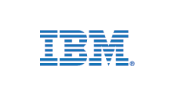
משימת חברה 5
IBM
IBM
AI / דאטה / ענן
דאטה
AI / דאטה / ענן. מודל טוב צריך לזהות דפוסים במידע ולהסביר אותם בצורה שימושית.
אימות לוגו / شعار الشركة מצאו את הלוגו בפארק. ציירו/תארו אותו בקצרה וקבלו אישור מדריך: ____________________________________________________________
5.1 מהו דאטה בהקשר של AI?
ما معنى البيانات في عالم الذكاء الاصطناعي؟
תשובת הצוות / إجابة الفريق: ____________________
5.2 למה דאטה חלקי יכול לגרום למודל לטעות?
لماذا قد تجعل البيانات الناقصة النموذج يخطئ؟
תשובת הצוות / إجابة الفريق: ____________________
ניקוד משימה____אישור מדריך____
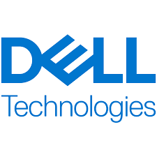
משימת חברה 6
DELL Technologies
DELL Technologies
תשתיות מחשוב / שרתים
תשתיות
תשתיות מחשוב / שרתים. מודל AI צריך שרתים, אחסון וכוח מחשוב כדי לעבוד בקנה מידה גדול.
אימות לוגו / شعار الشركة מצאו את הלוגו בפארק. ציירו/תארו אותו בקצרה וקבלו אישור מדריך: ____________________________________________________________
6.1 מה השאלה הכי טובה לשאול על חברה טכנולוגית שלא מכירים?
ما أفضل سؤال نسأله عن شركة تكنولوجية لا نعرفها؟
תשובת הצוות / إجابة الفريق: ____________________
6.2 איך חברה שאינה חברת AI יכולה עדיין להיות חלק מפארק הייטק?
كيف يمكن لشركة ليست شركة ذكاء اصطناعي أن تكون جزءًا من حديقة هاي تك؟
תשובת הצוות / إجابة الفريق: ____________________
ניקוד משימה____אישור מדריך____
משימת חברה 7
CyberArk
CyberArk
סייבר וזהויות
אבטחה
סייבר וזהויות. המודל צריך לדעת מי ניגש למידע ואיך שומרים עליו.
אימות לוגו / شعار الشركة מצאו את הלוגו בפארק. ציירו/תארו אותו בקצרה וקבלו אישור מדריך: ____________________________________________________________
7.1 מהי אחת המטרות המרכזיות של חברת סייבר?
ما أحد الأهداف الرئيسية لشركة سايبر؟
תשובת הצוות / إجابة الفريق: ____________________
7.2 למה אבטחת זהויות חשובה במערכת AI?
لماذا حماية الهويات مهمة في نظام ذكاء اصطناعي؟
תשובת הצוות / إجابة الفريق: ____________________
ניקוד משימה____אישור מדריך____
משימת חברה 8
WIX
WIX
אתרים / מוצר / UX
חוויית משתמשהמלצות
אתרים / מוצר / UX. גם מודל חכם לא יעזור אם המשתמשים לא מבינים איך להשתמש בו.
אימות לוגו / شعار الشركة מצאו את הלוגו בפארק. ציירו/תארו אותו בקצרה וקבלו אישור מדריך: ____________________________________________________________
8.1 מהי חוויית משתמש?
ما هي تجربة المستخدم؟
תשובת הצוות / إجابة الفريق: ____________________
8.2 למה מודל AI טוב צריך ממשק ברור?
لماذا يحتاج نموذج ذكاء اصطناعي جيد إلى واجهة واضحة؟
תשובת הצוות / إجابة الفريق: ____________________
ניקוד משימה____אישור מדריך____
משימת חברה 9
taboola
taboola
המלצות תוכן / דאטה
המלצות
המלצות תוכן / דאטה. מודל יכול להמליץ, אבל צריך להיזהר מבועה וממידע חלקי.
אימות לוגו / شعار الشركة מצאו את הלוגו בפארק. ציירו/תארו אותו בקצרה וקבלו אישור מדריך: ____________________________________________________________
9.1 מהי מערכת המלצות?
ما هو نظام التوصيات؟
תשובת הצוות / إجابة الفريق: ____________________
9.2 מה הסיכון במערכת שממליצה תמיד על אותו סוג תוכן?
ما الخطر في نظام يوصي دائمًا بنفس نوع المحتوى؟
תשובת הצוות / إجابة الفريق: ____________________
ניקוד משימה____אישור מדריך____
משימת חברה 10
RAFAEL
RAFAEL
ביטחון / מערכות מתקדמות
תשתיות
ביטחון / מערכות מתקדמות. AI יכול להשתלב במערכות מתקדמות, אך דורש בדיקות ואחריות.
אימות לוגו / شعار الشركة מצאו את הלוגו בפארק. ציירו/תארו אותו בקצרה וקבלו אישור מדריך: ____________________________________________________________
10.1 למה מערכות מתקדמות דורשות בדיקות רבות?
لماذا تحتاج الأنظمة المتقدمة إلى فحوصات كثيرة؟
תשובת הצוות / إجابة الفريق: ____________________
10.2 איך AI יכול להשתלב במערכות מתקדמות?
كيف يمكن للذكاء الاصطناعي أن يساعد في أنظمة متقدمة؟
תשובת הצוות / إجابة الفريق: ____________________
ניקוד משימה____אישור מדריך____
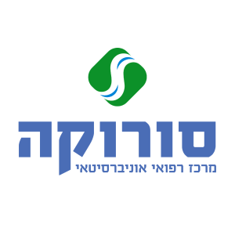
משימת חברה 11
Soroka
Soroka
בריאות / מחקר רפואי
דאטה
בריאות / מחקר רפואי. שילוב רפואה ודאטה יכול לשפר החלטות, אך דורש אחריות.
אימות לוגו / شعار الشركة מצאו את הלוגו בפארק. ציירו/תארו אותו בקצרה וקבלו אישור מדריך: ____________________________________________________________
11.1 מה השאלה הכי טובה לשאול על חברה טכנולוגית שלא מכירים?
ما أفضل سؤال نسأله عن شركة تكنولوجية لا نعرفها؟
תשובת הצוות / إجابة الفريق: ____________________
11.2 איך חברה שאינה חברת AI יכולה עדיין להיות חלק מפארק הייטק?
كيف يمكن لشركة ليست شركة ذكاء اصطناعي أن تكون جزءًا من حديقة هاي تك؟
תשובת הצוות / إجابة الفريق: ____________________
ניקוד משימה____אישור מדריך____
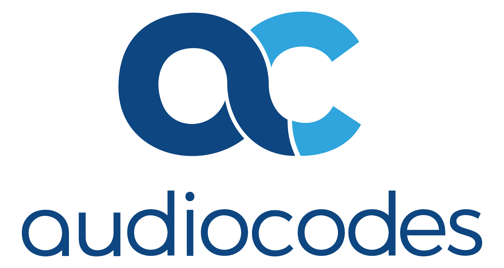
משימת חברה 12
AudioCodes
AudioCodes
תקשורת וקול
תקשורת
תקשורת וקול. מערכות AI צריכות להעביר מידע בצורה יציבה ובטוחה.
אימות לוגו / شعار الشركة מצאו את הלוגו בפארק. ציירו/תארו אותו בקצרה וקבלו אישור מדריך: ____________________________________________________________
12.1 למה תקשורת חשובה למערכות חכמות?
لماذا الاتصال مهم للأنظمة الذكية؟
תשובת הצוות / إجابة الفريق: ____________________
12.2 איזה רכיב במודל מתחזק בזכות חברת תקשורת?
أي جزء في النموذج يصبح أقوى بفضل شركة اتصالات؟
תשובת הצוות / إجابة الفريق: ____________________
ניקוד משימה____אישור מדריך____
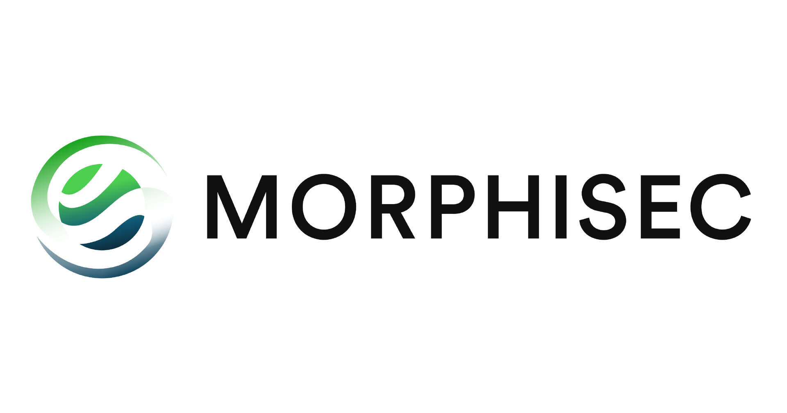
משימת חברה 13
Morphisec
Morphisec
סייבר
אבטחה
סייבר. המודל צריך לדעת מי ניגש למידע ואיך שומרים עליו.
אימות לוגו / شعار الشركة מצאו את הלוגו בפארק. ציירו/תארו אותו בקצרה וקבלו אישור מדריך: ____________________________________________________________
13.1 מהי אחת המטרות המרכזיות של חברת סייבר?
ما أحد الأهداف الرئيسية لشركة سايبر؟
תשובת הצוות / إجابة الفريق: ____________________
13.2 למה אבטחת זהויות חשובה במערכת AI?
لماذا حماية الهويات مهمة في نظام ذكاء اصطناعي؟
תשובת הצוות / إجابة الفريق: ____________________
ניקוד משימה____אישור מדריך____
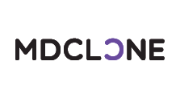
משימת חברה 14
MDCLONE
MDCLONE
דאטה רפואי
דאטה
דאטה רפואי. מודל בתחום בריאות צריך מידע איכותי ושמירה גבוהה על פרטיות.
אימות לוגו / شعار الشركة מצאו את הלוגו בפארק. ציירו/תארו אותו בקצרה וקבלו אישור מדריך: ____________________________________________________________
14.1 למה פרטיות חשובה במיוחד בתחום בריאות?
لماذا الخصوصية مهمة جدًا في مجال الصحة؟
תשובת הצוות / إجابة الفريق: ____________________
14.2 מי צריך לקבל החלטה רפואית סופית?
من يجب أن يتخذ القرار الطبي النهائي؟
תשובת הצוות / إجابة الفريق: ____________________
ניקוד משימה____אישור מדריך____
משימת חברה 15
Novocure
Novocure
בריאות / מדטק
דאטה
בריאות / מדטק. AI יכול לעזור בניתוח מידע רפואי, אך לא מחליף אנשי מקצוע.
אימות לוגו / شعار الشركة מצאו את הלוגו בפארק. ציירו/תארו אותו בקצרה וקבלו אישור מדריך: ____________________________________________________________
15.1 מה השאלה הכי טובה לשאול על חברה טכנולוגית שלא מכירים?
ما أفضل سؤال نسأله عن شركة تكنولوجية لا نعرفها؟
תשובת הצוות / إجابة الفريق: ____________________
15.2 איך חברה שאינה חברת AI יכולה עדיין להיות חלק מפארק הייטק?
كيف يمكن لشركة ليست شركة ذكاء اصطناعي أن تكون جزءًا من حديقة هاي تك؟
תשובת הצוות / إجابة الفريق: ____________________
ניקוד משימה____אישור מדריך____
משימת חברה 16
Lightricks
Lightricks
יצירה דיגיטלית / AI קריאייטיבי
דאטההמלצות
יצירה דיגיטלית / AI קריאייטיבי. AI יכול לעזור ליצור, אבל אדם עדיין בוחר סגנון, מסר ואחריות.
אימות לוגו / شعار الشركة מצאו את הלוגו בפארק. ציירו/תארו אותו בקצרה וקבלו אישור מדריך: ____________________________________________________________
16.1 איך AI יכול לעזור ביצירה דיגיטלית?
كيف يمكن للذكاء الاصطناعي أن يساعد في الإبداع الرقمي؟
תשובת הצוות / إجابة الفريق: ____________________
16.2 למה חשוב לבדוק תוכן שנוצר ב-AI לפני פרסום?
لماذا من المهم فحص محتوى صنعه الذكاء الاصطناعي قبل نشره؟
תשובת הצוות / إجابة الفريق: ____________________
ניקוד משימה____אישור מדריך____
משימת חברה 17
WEKA
WEKA
אחסון דאטה / תשתיות AI
דאטה
אחסון דאטה / תשתיות AI. כדי שמודל יעבוד מהר וטוב, צריך לנהל כמויות מידע גדולות.
אימות לוגו / شعار الشركة מצאו את הלוגו בפארק. ציירו/תארו אותו בקצרה וקבלו אישור מדריך: ____________________________________________________________
17.1 מה השאלה הכי טובה לשאול על חברה טכנולוגית שלא מכירים?
ما أفضل سؤال نسأله عن شركة تكنولوجية لا نعرفها؟
תשובת הצוות / إجابة الفريق: ____________________
17.2 איך חברה שאינה חברת AI יכולה עדיין להיות חלק מפארק הייטק?
كيف يمكن لشركة ليست شركة ذكاء اصطناعي أن تكون جزءًا من حديقة هاي تك؟
תשובת הצוות / إجابة الفريق: ____________________
ניקוד משימה____אישור מדריך____
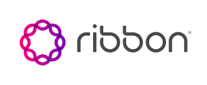
משימת חברה 18
Ribbon
Ribbon
תקשורת / רשתות
תקשורת
תקשורת / רשתות. מערכות AI צריכות להעביר מידע בצורה יציבה ובטוחה.
אימות לוגו / شعار الشركة מצאו את הלוגו בפארק. ציירו/תארו אותו בקצרה וקבלו אישור מדריך: ____________________________________________________________
18.1 למה תקשורת חשובה למערכות חכמות?
لماذا الاتصال مهم للأنظمة الذكية؟
תשובת הצוות / إجابة الفريق: ____________________
18.2 איזה רכיב במודל מתחזק בזכות חברת תקשורת?
أي جزء في النموذج يصبح أقوى بفضل شركة اتصالات؟
תשובת הצוות / إجابة الفريق: ____________________
ניקוד משימה____אישור מדריך____
משימת חברה 19
RAD
RAD
תקשורת ותשתיות
תקשורת
תקשורת ותשתיות. מערכות AI צריכות להעביר מידע בצורה יציבה ובטוחה.
אימות לוגו / شعار الشركة מצאו את הלוגו בפארק. ציירו/תארו אותו בקצרה וקבלו אישור מדריך: ____________________________________________________________
19.1 למה תקשורת חשובה למערכות חכמות?
لماذا الاتصال مهم للأنظمة الذكية؟
תשובת הצוות / إجابة الفريق: ____________________
19.2 איזה רכיב במודל מתחזק בזכות חברת תקשורת?
أي جزء في النموذج يصبح أقوى بفضل شركة اتصالات؟
תשובת הצוות / إجابة الفريق: ____________________
ניקוד משימה____אישור מדריך____
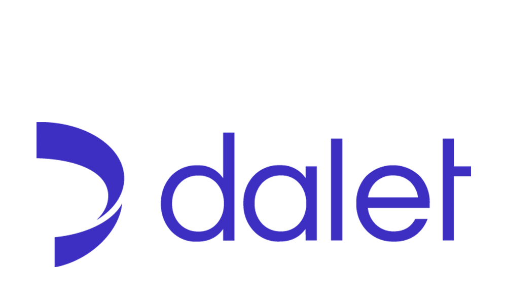
משימת חברה 20
Dalet
Dalet
מדיה ותוכן
תוכן
מדיה ותוכן. AI יכול לעזור לארגן, לחפש ולהמליץ על תוכן.
אימות לוגו / شعار الشركة מצאו את הלוגו בפארק. ציירו/תארו אותו בקצרה וקבלו אישור מדריך: ____________________________________________________________
20.1 מה השאלה הכי טובה לשאול על חברה טכנולוגית שלא מכירים?
ما أفضل سؤال نسأله عن شركة تكنولوجية لا نعرفها؟
תשובת הצוות / إجابة الفريق: ____________________
20.2 איך חברה שאינה חברת AI יכולה עדיין להיות חלק מפארק הייטק?
كيف يمكن لشركة ليست شركة ذكاء اصطناعي أن تكون جزءًا من حديقة هاي تك؟
תשובת הצוות / إجابة الفريق: ____________________
ניקוד משימה____אישור מדריך____
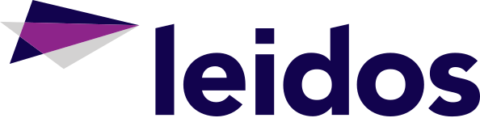
משימת חברה 21
Leidos
Leidos
מערכות טכנולוגיות / דאטה
דאטה
מערכות טכנולוגיות / דאטה. פתרונות גדולים דורשים שילוב בין תוכנה, דאטה ותפעול.
אימות לוגו / شعار الشركة מצאו את הלוגו בפארק. ציירו/תארו אותו בקצרה וקבלו אישור מדריך: ____________________________________________________________
21.1 מה השאלה הכי טובה לשאול על חברה טכנולוגית שלא מכירים?
ما أفضل سؤال نسأله عن شركة تكنولوجية لا نعرفها؟
תשובת הצוות / إجابة الفريق: ____________________
21.2 איך חברה שאינה חברת AI יכולה עדיין להיות חלק מפארק הייטק?
كيف يمكن لشركة ليست شركة ذكاء اصطناعي أن تكون جزءًا من حديقة هاي تك؟
תשובת הצוות / إجابة الفريق: ____________________
ניקוד משימה____אישור מדריך____
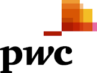
משימת חברה 22
PWC Israel
PWC Israel
ייעוץ עסקי / טכנולוגי
אתיקה ובקרה
ייעוץ עסקי / טכנולוגי. יועצים עוזרים לארגונים לבחור פתרונות וליישם אותם נכון.
אימות לוגו / شعار الشركة מצאו את הלוגו בפארק. ציירו/תארו אותו בקצרה וקבלו אישור מדריך: ____________________________________________________________
22.1 מה תפקיד ייעוץ טכנולוגי בארגון?
ما دور الاستشارة التكنولوجية في مؤسسة؟
תשובת הצוות / إجابة الفريق: ____________________
ניקוד משימה____אישור מדריך____
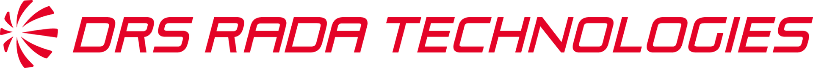
משימת חברה 23
DRS RADA Technologies
DRS RADA Technologies
ביטחון / מערכות חכמות
תשתיות
ביטחון / מערכות חכמות. AI יכול להשתלב במערכות מתקדמות, אך דורש בדיקות ואחריות.
אימות לוגו / شعار الشركة מצאו את הלוגו בפארק. ציירו/תארו אותו בקצרה וקבלו אישור מדריך: ____________________________________________________________
23.1 למה מערכות מתקדמות דורשות בדיקות רבות?
لماذا تحتاج الأنظمة المتقدمة إلى فحوصات كثيرة؟
תשובת הצוות / إجابة الفريق: ____________________
23.2 איך AI יכול להשתלב במערכות מתקדמות?
كيف يمكن للذكاء الاصطناعي أن يساعد في أنظمة متقدمة؟
תשובת הצוות / إجابة الفريق: ____________________
ניקוד משימה____אישור מדריך____
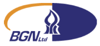
משימת חברה 24
BGN
BGN
מסחור מחקר / אוניברסיטה
דאטה
מסחור מחקר / אוניברסיטה. מחקר הופך רעיון לידע שאפשר לפתח ממנו פתרונות.
אימות לוגו / شعار الشركة מצאו את הלוגו בפארק. ציירו/תארו אותו בקצרה וקבלו אישור מדריך: ____________________________________________________________
24.1 מה הקשר בין מחקר לחדשנות?
ما العلاقة بين البحث والابتكار؟
תשובת הצוות / إجابة الفريق: ____________________
ניקוד משימה____אישור מדריך____
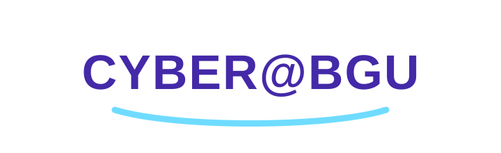
משימת חברה 25
Cyber@BGU
Cyber@BGU
מחקר סייבר / אקדמיה
אבטחה
מחקר סייבר / אקדמיה. מחקר עוזר להבין איומים חדשים ולפתח פתרונות טובים יותר.
אימות לוגו / شعار الشركة מצאו את הלוגו בפארק. ציירו/תארו אותו בקצרה וקבלו אישור מדריך: ____________________________________________________________
25.1 מה השאלה הכי טובה לשאול על חברה טכנולוגית שלא מכירים?
ما أفضل سؤال نسأله عن شركة تكنولوجية لا نعرفها؟
תשובת הצוות / إجابة الفريق: ____________________
25.2 איך חברה שאינה חברת AI יכולה עדיין להיות חלק מפארק הייטק?
كيف يمكن لشركة ليست شركة ذكاء اصطناعي أن تكون جزءًا من حديقة هاي تك؟
תשובת הצוות / إجابة الفريق: ____________________
ניקוד משימה____אישור מדריך____
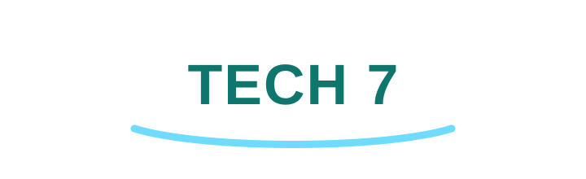
משימת חברה 26
Tech 7
Tech 7
אקוסיסטם סטארטאפים
אתיקה ובקרה
אקוסיסטם סטארטאפים. רעיונות טכנולוגיים צריכים קהילה, תמיכה, שותפים ומשקיעים.
אימות לוגו / شعار الشركة מצאו את הלוגו בפארק. ציירו/תארו אותו בקצרה וקבלו אישור מדריך: ____________________________________________________________
26.1 מה עוזר לרעיון להפוך לסטארטאפ?
ما الذي يساعد الفكرة على أن تصبح ستارت أب؟
תשובת הצוות / إجابة الفريق: ____________________
26.2 למה חשוב להציג רעיון לאחרים?
لماذا من المهم عرض الفكرة على الآخرين؟
תשובת הצוות / إجابة الفريق: ____________________
ניקוד משימה____אישור מדריך____
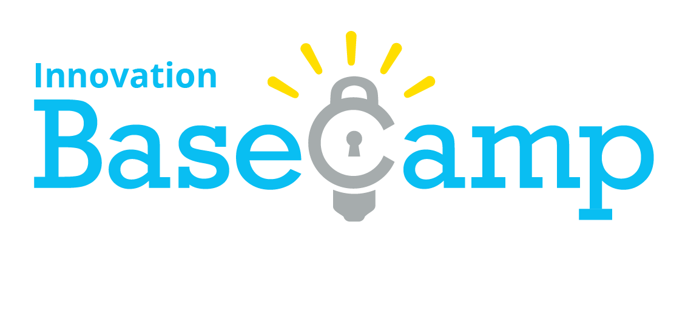
משימת חברה 27
Innovation Basecamp
Innovation Basecamp
יזמות / חדשנות
אתיקה ובקרה
יזמות / חדשנות. רעיונות טכנולוגיים צריכים קהילה, תמיכה, שותפים ומשקיעים.
אימות לוגו / شعار الشركة מצאו את הלוגו בפארק. ציירו/תארו אותו בקצרה וקבלו אישור מדריך: ____________________________________________________________
27.1 מה עוזר לרעיון להפוך לסטארטאפ?
ما الذي يساعد الفكرة على أن تصبح ستارت أب؟
תשובת הצוות / إجابة الفريق: ____________________
27.2 למה חשוב להציג רעיון לאחרים?
لماذا من المهم عرض الفكرة على الآخرين؟
תשובת הצוות / إجابة الفريق: ____________________
ניקוד משימה____אישור מדריך____
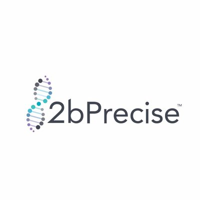
משימת חברה 28
2bPrecise
2bPrecise
בריאות דיגיטלית / רפואה מותאמת
דאטההמלצות
בריאות דיגיטלית / רפואה מותאמת. AI יכול לעזור להתאים טיפול או המלצה, אבל אדם מקצועי חייב לבדוק.
אימות לוגו / شعار الشركة מצאו את הלוגו בפארק. ציירו/תארו אותו בקצרה וקבלו אישור מדריך: ____________________________________________________________
28.1 מה השאלה הכי טובה לשאול על חברה טכנולוגית שלא מכירים?
ما أفضل سؤال نسأله عن شركة تكنولوجية لا نعرفها؟
תשובת הצוות / إجابة الفريق: ____________________
28.2 איך חברה שאינה חברת AI יכולה עדיין להיות חלק מפארק הייטק?
كيف يمكن لشركة ليست شركة ذكاء اصطناعي أن تكون جزءًا من حديقة هاي تك؟
תשובת הצוות / إجابة الفريق: ____________________
ניקוד משימה____אישור מדריך____
משימת חברה 29
מרכז חדשנות
מרכז חדשנות
אקוסיסטם
אתיקה ובקרה
תחנת אקוסיסטם שמחברת חברות, תלמידים, יזמים וקהילה.
אימות לוגו / شعار الشركة מצאו את הלוגו בפארק. ציירו/תארו אותו בקצרה וקבלו אישור מדריך: ____________________________________________________________
29.1 מהו אקוסיסטם הייטק?
ما هي منظومة الهاي تك؟
תשובת הצוות / إجابة الفريق: ____________________
ניקוד משימה____אישור מדריך____
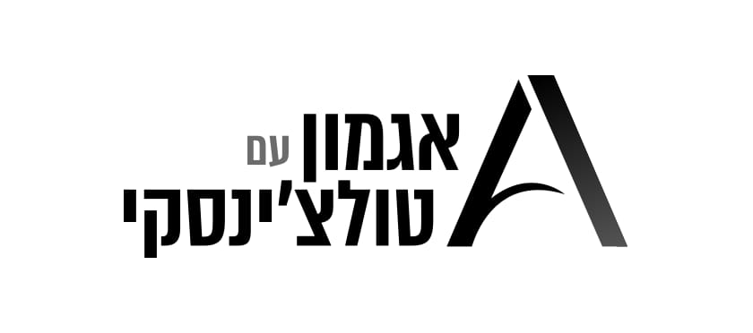
משימת חברה 30
Agmon with Tulchinsky
Agmon with Tulchinsky
שירותים משפטיים / אקוסיסטם
אתיקה ובקרה
שירותים משפטיים / אקוסיסטם. לא כל גוף מפתח AI, אבל הוא יכול לתמוך בחברות, אנשים ורעיונות.
אימות לוגו / شعار الشركة מצאו את הלוגו בפארק. ציירו/תארו אותו בקצרה וקבלו אישור מדריך: ____________________________________________________________
30.1 מהו אקוסיסטם הייטק?
ما هي منظومة الهاي تك؟
תשובת הצוות / إجابة الفريق: ____________________
ניקוד משימה____אישור מדריך____
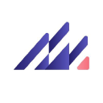
משימת חברה 31
Altera Digital Health
Altera Digital Health
בריאות דיגיטלית
דאטה
בריאות דיגיטלית. מודל בתחום בריאות צריך מידע איכותי ושמירה גבוהה על פרטיות.
אימות לוגו / شعار الشركة מצאו את הלוגו בפארק. ציירו/תארו אותו בקצרה וקבלו אישור מדריך: ____________________________________________________________
31.1 למה פרטיות חשובה במיוחד בתחום בריאות?
لماذا الخصوصية مهمة جدًا في مجال الصحة؟
תשובת הצוות / إجابة الفريق: ____________________
31.2 מי צריך לקבל החלטה רפואית סופית?
من يجب أن يتخذ القرار الطبي النهائي؟
תשובת הצוות / إجابة الفريق: ____________________
ניקוד משימה____אישור מדריך____
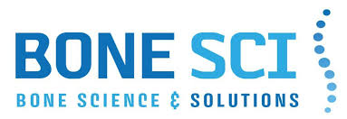
משימת חברה 32
Bone Sci Bio
Bone Sci Bio
ביוטק / בריאות
דאטה
ביוטק / בריאות. דאטה ומחקר יכולים לעזור למצוא דפוסים בעולם הבריאות.
אימות לוגו / شعار الشركة מצאו את הלוגו בפארק. ציירו/תארו אותו בקצרה וקבלו אישור מדריך: ____________________________________________________________
32.1 מה השאלה הכי טובה לשאול על חברה טכנולוגית שלא מכירים?
ما أفضل سؤال نسأله عن شركة تكنولوجية لا نعرفها؟
תשובת הצוות / إجابة الفريق: ____________________
32.2 איך חברה שאינה חברת AI יכולה עדיין להיות חלק מפארק הייטק?
كيف يمكن لشركة ليست شركة ذكاء اصطناعي أن تكون جزءًا من حديقة هاي تك؟
תשובת הצוות / إجابة الفريق: ____________________
ניקוד משימה____אישור מדריך____
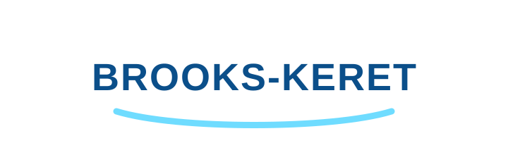
משימת חברה 33
brooks-keret
brooks-keret
פיננסים / ניהול חברות
אתיקה ובקרה
פיננסים / ניהול חברות. לא כל גוף מפתח AI, אבל הוא יכול לתמוך בחברות, אנשים ורעיונות.
אימות לוגו / شعار الشركة מצאו את הלוגו בפארק. ציירו/תארו אותו בקצרה וקבלו אישור מדריך: ____________________________________________________________
33.1 מהו אקוסיסטם הייטק?
ما هي منظومة الهاي تك؟
תשובת הצוות / إجابة الفريق: ____________________
ניקוד משימה____אישור מדריך____
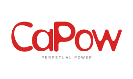
משימת חברה 34
CaPow
CaPow
רובוטיקה / אנרגיה / תפעול
תשתיות
רובוטיקה / אנרגיה / תפעול. AI יכול לעזור למערכות לפעול ביעילות בסביבה אמיתית.
אימות לוגו / شعار الشركة מצאו את הלוגו בפארק. ציירו/תארו אותו בקצרה וקבלו אישור מדריך: ____________________________________________________________
34.1 מה השאלה הכי טובה לשאול על חברה טכנולוגית שלא מכירים?
ما أفضل سؤال نسأله عن شركة تكنولوجية لا نعرفها؟
תשובת הצוות / إجابة الفريق: ____________________
34.2 איך חברה שאינה חברת AI יכולה עדיין להיות חלק מפארק הייטק?
كيف يمكن لشركة ليست شركة ذكاء اصطناعي أن تكون جزءًا من حديقة هاي تك؟
תשובת הצוות / إجابة الفريق: ____________________
ניקוד משימה____אישור מדריך____
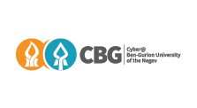
משימת חברה 35
CBG
CBG
אקוסיסטם / שירותים עסקיים
אתיקה ובקרה
אקוסיסטם / שירותים עסקיים. לא כל גוף מפתח AI, אבל הוא יכול לתמוך בחברות, אנשים ורעיונות.
אימות לוגו / شعار الشركة מצאו את הלוגו בפארק. ציירו/תארו אותו בקצרה וקבלו אישור מדריך: ____________________________________________________________
35.1 מהו אקוסיסטם הייטק?
ما هي منظومة الهاي تك؟
תשובת הצוות / إجابة الفريق: ____________________
ניקוד משימה____אישור מדריך____
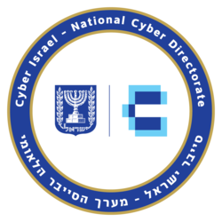
משימת חברה 36
Cert
Cert
סייבר / הכשרה / אמון דיגיטלי
אבטחה
סייבר / הכשרה / אמון דיגיטלי. המודל צריך לדעת מי ניגש למידע ואיך שומרים עליו.
אימות לוגו / شعار الشركة מצאו את הלוגו בפארק. ציירו/תארו אותו בקצרה וקבלו אישור מדריך: ____________________________________________________________
36.1 מהי אחת המטרות המרכזיות של חברת סייבר?
ما أحد الأهداف الرئيسية لشركة سايبر؟
תשובת הצוות / إجابة الفريق: ____________________
36.2 למה אבטחת זהויות חשובה במערכת AI?
لماذا حماية الهويات مهمة في نظام ذكاء اصطناعي؟
תשובת הצוות / إجابة الفريق: ____________________
ניקוד משימה____אישור מדריך____
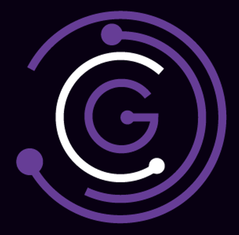
משימת חברה 37
Cyberglobes
Cyberglobes
סייבר / מודיעין / אקוסיסטם
אבטחה
סייבר / מודיעין / אקוסיסטם. המודל צריך לדעת מי ניגש למידע ואיך שומרים עליו.
אימות לוגו / شعار الشركة מצאו את הלוגו בפארק. ציירו/תארו אותו בקצרה וקבלו אישור מדריך: ____________________________________________________________
37.1 מהי אחת המטרות המרכזיות של חברת סייבר?
ما أحد الأهداف الرئيسية لشركة سايبر؟
תשובת הצוות / إجابة الفريق: ____________________
37.2 למה אבטחת זהויות חשובה במערכת AI?
لماذا حماية الهويات مهمة في نظام ذكاء اصطناعي؟
תשובת הצוות / إجابة الفريق: ____________________
ניקוד משימה____אישור מדריך____
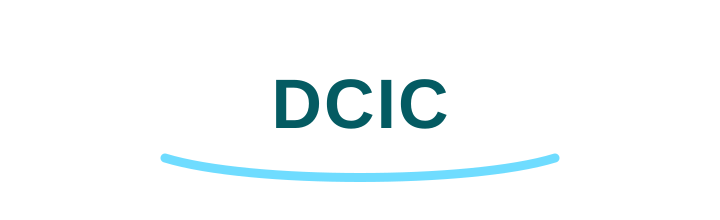
משימת חברה 38
DCIC
DCIC
חדשנות / אקוסיסטם
אתיקה ובקרה
חדשנות / אקוסיסטם. לא כל גוף מפתח AI, אבל הוא יכול לתמוך בחברות, אנשים ורעיונות.
אימות לוגו / شعار الشركة מצאו את הלוגו בפארק. ציירו/תארו אותו בקצרה וקבלו אישור מדריך: ____________________________________________________________
38.1 מהו אקוסיסטם הייטק?
ما هي منظومة الهاي تك؟
תשובת הצוות / إجابة الفريق: ____________________
ניקוד משימה____אישור מדריך____
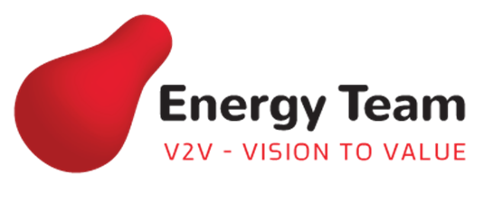
משימת חברה 39
energyteam
energyteam
אנרגיה / תשתיות
תשתיות
אנרגיה / תשתיות. מערכות חכמות יכולות לעזור לנהל משאבים טוב יותר.
אימות לוגו / شعار الشركة מצאו את הלוגו בפארק. ציירו/תארו אותו בקצרה וקבלו אישור מדריך: ____________________________________________________________
39.1 איך AI יכול לעזור בתחום אנרגיה?
كيف يمكن للذكاء الاصطناعي أن يساعد في مجال الطاقة؟
תשובת הצוות / إجابة الفريق: ____________________
ניקוד משימה____אישור מדריך____
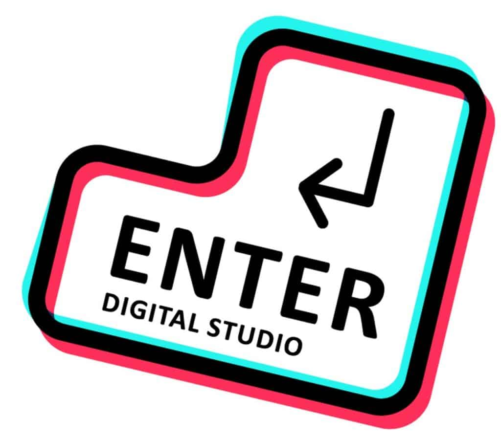
משימת חברה 40
ENTER
ENTER
אקוסיסטם / חדשנות
אתיקה ובקרה
אקוסיסטם / חדשנות. לא כל גוף מפתח AI, אבל הוא יכול לתמוך בחברות, אנשים ורעיונות.
אימות לוגו / شعار الشركة מצאו את הלוגו בפארק. ציירו/תארו אותו בקצרה וקבלו אישור מדריך: ____________________________________________________________
40.1 מהו אקוסיסטם הייטק?
ما هي منظومة الهاي تك؟
תשובת הצוות / إجابة الفريق: ____________________
ניקוד משימה____אישור מדריך____
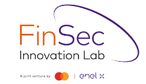
משימת חברה 41
FinSec Innovation Lab
FinSec Innovation Lab
פינטק / סייבר / חדשנות
אבטחה
פינטק / סייבר / חדשנות. מערכות כספיות צריכות אמון, הגנה ובדיקת סיכונים.
אימות לוגו / شعار الشركة מצאו את הלוגו בפארק. ציירו/תארו אותו בקצרה וקבלו אישור מדריך: ____________________________________________________________
41.1 למה מערכות פיננסיות צריכות אבטחה חזקה?
لماذا تحتاج الأنظمة المالية إلى حماية قوية؟
תשובת הצוות / إجابة الفريق: ____________________
ניקוד משימה____אישור מדריך____
משימת חברה 42
HyperGuest
HyperGuest
תיירות / פלטפורמה דיגיטלית
דאטההמלצות
תיירות / פלטפורמה דיגיטלית. מוצר טוב משתמש במידע כדי לתת ערך למשתמש.
אימות לוגו / شعار الشركة מצאו את הלוגו בפארק. ציירו/תארו אותו בקצרה וקבלו אישור מדריך: ____________________________________________________________
42.1 מה השאלה הכי טובה לשאול על חברה טכנולוגית שלא מכירים?
ما أفضل سؤال نسأله عن شركة تكنولوجية لا نعرفها؟
תשובת הצוות / إجابة الفريق: ____________________
42.2 איך חברה שאינה חברת AI יכולה עדיין להיות חלק מפארק הייטק?
كيف يمكن لشركة ليست شركة ذكاء اصطناعي أن تكون جزءًا من حديقة هاي تك؟
תשובת הצוות / إجابة الفريق: ____________________
ניקוד משימה____אישור מדריך____
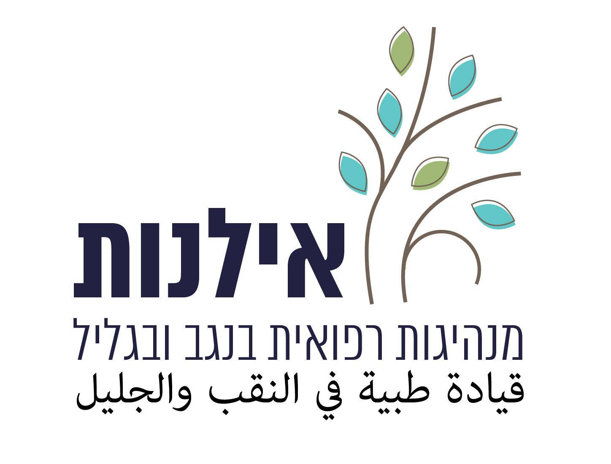
משימת חברה 43
Ilanot
Ilanot
אקוסיסטם / שירותים
אתיקה ובקרה
אקוסיסטם / שירותים. לא כל גוף מפתח AI, אבל הוא יכול לתמוך בחברות, אנשים ורעיונות.
אימות לוגו / شعار الشركة מצאו את הלוגו בפארק. ציירו/תארו אותו בקצרה וקבלו אישור מדריך: ____________________________________________________________
43.1 מהו אקוסיסטם הייטק?
ما هي منظومة الهاي تك؟
תשובת הצוות / إجابة الفريق: ____________________
ניקוד משימה____אישור מדריך____
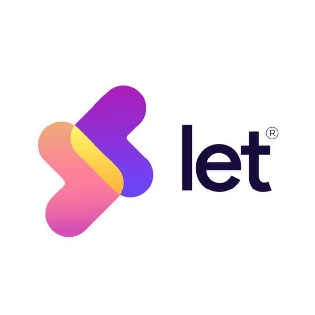
משימת חברה 44
Let
Let
מוצר / שירות דיגיטלי
חוויית משתמש
מוצר / שירות דיגיטלי. צריך להפוך טכנולוגיה לפתרון ברור למשתמש.
אימות לוגו / شعار الشركة מצאו את הלוגו בפארק. ציירו/תארו אותו בקצרה וקבלו אישור מדריך: ____________________________________________________________
44.1 מה השאלה הכי טובה לשאול על חברה טכנולוגית שלא מכירים?
ما أفضل سؤال نسأله عن شركة تكنولوجية لا نعرفها؟
תשובת הצוות / إجابة الفريق: ____________________
ניקוד משימה____אישור מדריך____
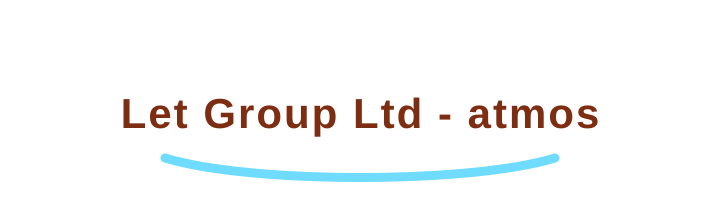
משימת חברה 45
Let Group Ltd - atmos
Let Group Ltd - atmos
מוצר / פלטפורמה דיגיטלית
חוויית משתמש
מוצר / פלטפורמה דיגיטלית. צריך להפוך טכנולוגיה לפתרון ברור למשתמש.
אימות לוגו / شعار الشركة מצאו את הלוגו בפארק. ציירו/תארו אותו בקצרה וקבלו אישור מדריך: ____________________________________________________________
45.1 מה השאלה הכי טובה לשאול על חברה טכנולוגית שלא מכירים?
ما أفضل سؤال نسأله عن شركة تكنولوجية لا نعرفها؟
תשובת הצוות / إجابة الفريق: ____________________
ניקוד משימה____אישור מדריך____
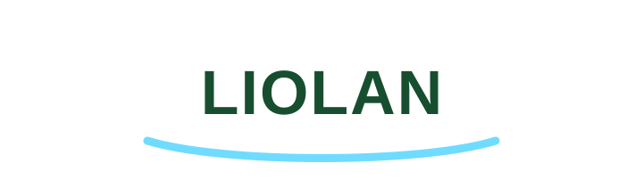
משימת חברה 46
liolan
liolan
טכנולוגיה / שירותים
דאטה
טכנולוגיה / שירותים. תחום טכנולוגי שיכול להשתלב באקוסיסטם של הפארק.
אימות לוגו / شعار الشركة מצאו את הלוגו בפארק. ציירו/תארו אותו בקצרה וקבלו אישור מדריך: ____________________________________________________________
46.1 מה כדאי לשאול כשפוגשים חברה טכנולוגית שלא מכירים?
ماذا يجب أن نسأل عندما نلتقي شركة تكنولوجية لا نعرفها؟
תשובת הצוות / إجابة الفريق: ____________________
ניקוד משימה____אישור מדריך____
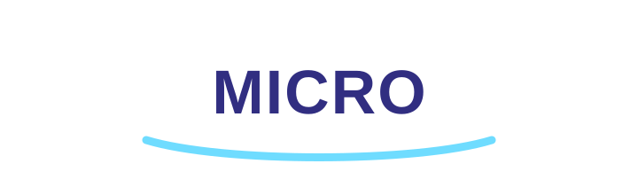
משימת חברה 47
Micro
Micro
טכנולוגיה / שירותים
דאטה
טכנולוגיה / שירותים. תחום טכנולוגי שיכול להשתלב באקוסיסטם של הפארק.
אימות לוגו / شعار الشركة מצאו את הלוגו בפארק. ציירו/תארו אותו בקצרה וקבלו אישור מדריך: ____________________________________________________________
47.1 מה כדאי לשאול כשפוגשים חברה טכנולוגית שלא מכירים?
ماذا يجب أن نسأل عندما نلتقي شركة تكنولوجية لا نعرفها؟
תשובת הצוות / إجابة الفريق: ____________________
ניקוד משימה____אישור מדריך____
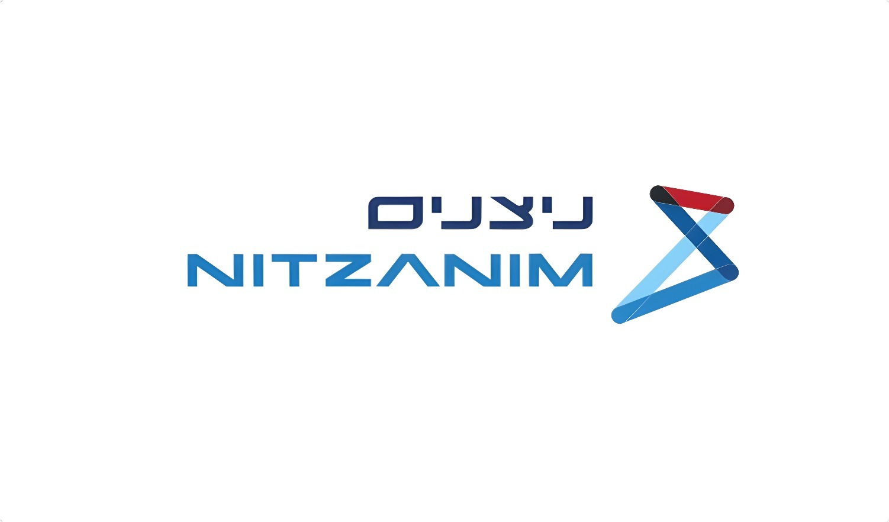
משימת חברה 48
Nitzanim
Nitzanim
הכשרה / חינוך טכנולוגי
אתיקה ובקרה
הכשרה / חינוך טכנולוגי. צמצום פערים מתחיל בלמידה נגישה וברורה.
אימות לוגו / شعار الشركة מצאו את הלוגו בפארק. ציירו/תארו אותו בקצרה וקבלו אישור מדריך: ____________________________________________________________
48.1 איך טכנולוגיה יכולה לצמצם פערים בלמידה?
كيف يمكن للتكنولوجيا أن تقلل الفجوات في التعلم؟
תשובת הצוות / إجابة الفريق: ____________________
ניקוד משימה____אישור מדריך____
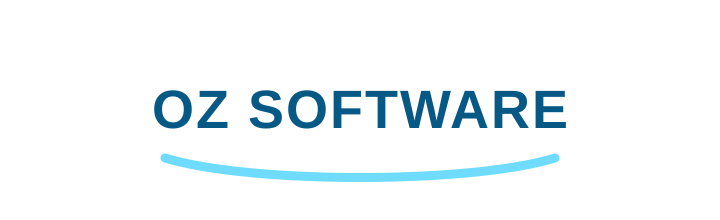
משימת חברה 49
Oz software
Oz software
פיתוח תוכנה
דאטה
פיתוח תוכנה. AI יכול לעזור למפתחים, אבל הקוד עדיין דורש בדיקה והבנה.
אימות לוגו / شعار الشركة מצאו את הלוגו בפארק. ציירו/תארו אותו בקצרה וקבלו אישור מדריך: ____________________________________________________________
49.1 איך AI יכול לעזור למפתחי תוכנה?
كيف يمكن للذكاء الاصطناعي أن يساعد مطوري البرامج؟
תשובת הצוות / إجابة الفريق: ____________________
49.2 למה לא מספיק להעתיק קוד ש-AI כתב?
لماذا لا يكفي نسخ كود كتبه الذكاء الاصطناعي؟
תשובת הצוות / إجابة الفريق: ____________________
ניקוד משימה____אישור מדריך____
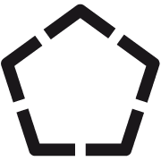
משימת חברה 50
Penta Drone Robotics
Penta Drone Robotics
רחפנים / רובוטיקה
תשתיות
רחפנים / רובוטיקה. AI יכול לעזור למכונות לקבל החלטות בעולם הפיזי.
אימות לוגו / شعار الشركة מצאו את הלוגו בפארק. ציירו/תארו אותו בקצרה וקבלו אישור מדריך: ____________________________________________________________
50.1 מה מיוחד ברובוטיקה לעומת אפליקציה רגילה?
ما المختلف في الروبوتات مقارنة بتطبيق عادي؟
תשובת הצוות / إجابة الفريق: ____________________
50.2 איך AI יכול לעזור לרובוט?
كيف يمكن للذكاء الاصطناعي أن يساعد الروبوت؟
תשובת הצוות / إجابة الفريق: ____________________
ניקוד משימה____אישור מדריך____
משימת חברה 51
Retama
Retama
אקוסיסטם / שירותים
אתיקה ובקרה
אקוסיסטם / שירותים. לא כל גוף מפתח AI, אבל הוא יכול לתמוך בחברות, אנשים ורעיונות.
אימות לוגו / شعار الشركة מצאו את הלוגו בפארק. ציירו/תארו אותו בקצרה וקבלו אישור מדריך: ____________________________________________________________
51.1 מהו אקוסיסטם הייטק?
ما هي منظومة الهاي تك؟
תשובת הצוות / إجابة الفريق: ____________________
ניקוד משימה____אישור מדריך____
משימת חברה 52
Rezilion
Rezilion
סייבר / אבטחת תוכנה
אבטחה
סייבר / אבטחת תוכנה. המודל צריך לדעת מי ניגש למידע ואיך שומרים עליו.
אימות לוגו / شعار الشركة מצאו את הלוגו בפארק. ציירו/תארו אותו בקצרה וקבלו אישור מדריך: ____________________________________________________________
52.1 מהי אחת המטרות המרכזיות של חברת סייבר?
ما أحد الأهداف الرئيسية لشركة سايبر؟
תשובת הצוות / إجابة الفريق: ____________________
52.2 למה אבטחת זהויות חשובה במערכת AI?
لماذا حماية الهويات مهمة في نظام ذكاء اصطناعي؟
תשובת הצוות / إجابة الفريق: ____________________
ניקוד משימה____אישור מדריך____
משימת חברה 53
RSecurity
RSecurity
סייבר
אבטחה
סייבר. המודל צריך לדעת מי ניגש למידע ואיך שומרים עליו.
אימות לוגו / شعار الشركة מצאו את הלוגו בפארק. ציירו/תארו אותו בקצרה וקבלו אישור מדריך: ____________________________________________________________
53.1 מהי אחת המטרות המרכזיות של חברת סייבר?
ما أحد الأهداف الرئيسية لشركة سايبر؟
תשובת הצוות / إجابة الفريق: ____________________
53.2 למה אבטחת זהויות חשובה במערכת AI?
لماذا حماية الهويات مهمة في نظام ذكاء اصطناعي؟
תשובת הצוות / إجابة الفريق: ____________________
ניקוד משימה____אישור מדריך____
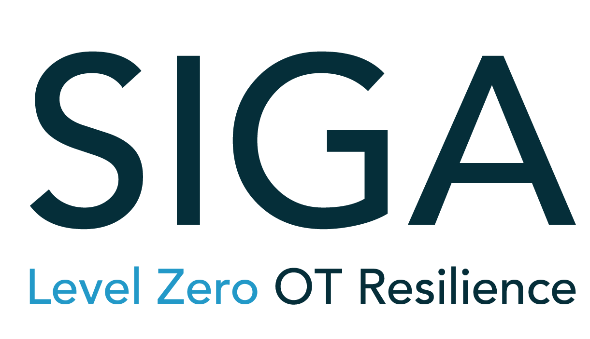
משימת חברה 54
SIGA
SIGA
סייבר תעשייתי / OT
אבטחה
סייבר תעשייתי / OT. מודל AI לא פועל רק במסך; לפעמים הוא קשור למערכות אמיתיות שצריך להגן עליהן.
אימות לוגו / شعار الشركة מצאו את הלוגו בפארק. ציירו/תארו אותו בקצרה וקבלו אישור מדריך: ____________________________________________________________
54.1 מה מיוחד בסייבר תעשייתי / OT?
ما المميز في السايبر الصناعي؟
תשובת הצוות / إجابة الفريق: ____________________
54.2 למה טעות במערכת AI שמחוברת למערכת פיזית יכולה להיות מסוכנת יותר?
لماذا قد يكون خطأ في نظام ذكاء اصطناعي متصل بجهاز حقيقي أخطر؟
תשובת הצוות / إجابة الفريق: ____________________
ניקוד משימה____אישור מדריך____
משימת חברה 55
Sigmabit
Sigmabit
ביטחון / סייבר / תוכנה
אבטחה
ביטחון / סייבר / תוכנה. מערכות מורכבות צריכות הגנה, בדיקות ואחריות.
אימות לוגו / شعار الشركة מצאו את הלוגו בפארק. ציירו/תארו אותו בקצרה וקבלו אישור מדריך: ____________________________________________________________
55.1 מה השאלה הכי טובה לשאול על חברה טכנולוגית שלא מכירים?
ما أفضل سؤال نسأله عن شركة تكنولوجية لا نعرفها؟
תשובת הצוות / إجابة الفريق: ____________________
55.2 איך חברה שאינה חברת AI יכולה עדיין להיות חלק מפארק הייטק?
كيف يمكن لشركة ليست شركة ذكاء اصطناعي أن تكون جزءًا من حديقة هاي تك؟
תשובת הצוות / إجابة الفريق: ____________________
ניקוד משימה____אישור מדריך____
משימת חברה 56
SignatureIT
SignatureIT
שירותי IT / תשתיות
תשתיות
שירותי IT / תשתיות. כדי שמערכת תעבוד, צריך תחזוקה, אבטחה ותמיכה.
אימות לוגו / شعار الشركة מצאו את הלוגו בפארק. ציירו/תארו אותו בקצרה וקבלו אישור מדריך: ____________________________________________________________
56.1 למה שירותי IT חשובים בארגון?
لماذا خدمات تكنولوجيا المعلومات مهمة في مؤسسة؟
תשובת הצוות / إجابة الفريق: ____________________
ניקוד משימה____אישור מדריך____
משימת חברה 57
Siraj
Siraj
טכנולוגיה / שירותים דיגיטליים
דאטה
טכנולוגיה / שירותים דיגיטליים. תחום טכנולוגי שיכול להשתלב באקוסיסטם של הפארק.
אימות לוגו / شعار الشركة מצאו את הלוגו בפארק. ציירו/תארו אותו בקצרה וקבלו אישור מדריך: ____________________________________________________________
57.1 מה כדאי לשאול כשפוגשים חברה טכנולוגית שלא מכירים?
ماذا يجب أن نسأل عندما نلتقي شركة تكنولوجية لا نعرفها؟
תשובת הצוות / إجابة الفريق: ____________________
ניקוד משימה____אישור מדריך____
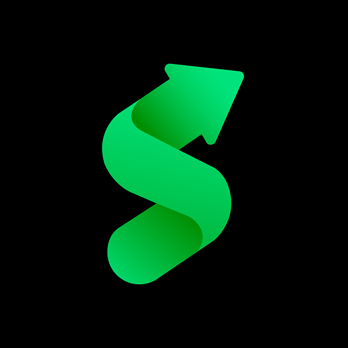
משימת חברה 58
SoundCampaign
SoundCampaign
מוזיקה / שיווק דיגיטלי
תוכן
מוזיקה / שיווק דיגיטלי. AI יכול לעזור ליצור קמפיין, אך חייבים לבדוק שהמסר אמין ומתאים.
אימות לוגו / شعار الشركة מצאו את הלוגו בפארק. ציירו/תארו אותו בקצרה וקבלו אישור מדריך: ____________________________________________________________
58.1 מה חשוב לבדוק לפני שמפרסמים קמפיין שנוצר בעזרת AI?
ماذا يجب أن نفحص قبل نشر حملة أُنشئت بمساعدة الذكاء الاصطناعي؟
תשובת הצוות / إجابة الفريق: ____________________
ניקוד משימה____אישור מדריך____
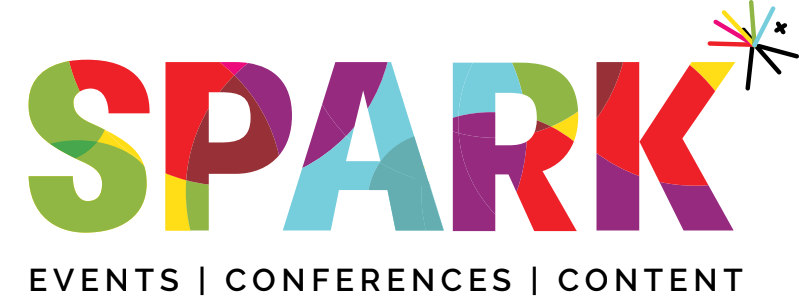
משימת חברה 59
Spark Marketing IL
Spark Marketing IL
שיווק דיגיטלי
תוכן
שיווק דיגיטלי. דאטה ו-AI יכולים לעזור להבין קהלים, אך אסור לפגוע בפרטיות.
אימות לוגו / شعار الشركة מצאו את הלוגו בפארק. ציירו/תארו אותו בקצרה וקבלו אישור מדריך: ____________________________________________________________
59.1 איך דאטה יכול לעזור בשיווק דיגיטלי?
كيف يمكن للبيانات أن تساعد في التسويق الرقمي؟
תשובת הצוות / إجابة الفريق: ____________________
ניקוד משימה____אישור מדריך____
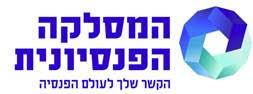
משימת חברה 60
Swiftness
Swiftness
תוכנה / אוטומציה
דאטה
תוכנה / אוטומציה. AI יכול לחסוך פעולות חוזרות, אך צריך להגדיר נכון את הכללים.
אימות לוגו / شعار الشركة מצאו את הלוגו בפארק. ציירו/תארו אותו בקצרה וקבלו אישור מדריך: ____________________________________________________________
60.1 מה השאלה הכי טובה לשאול על חברה טכנולוגית שלא מכירים?
ما أفضل سؤال نسأله عن شركة تكنولوجية لا نعرفها؟
תשובת הצוות / إجابة الفريق: ____________________
60.2 איך חברה שאינה חברת AI יכולה עדיין להיות חלק מפארק הייטק?
كيف يمكن لشركة ليست شركة ذكاء اصطناعي أن تكون جزءًا من حديقة هاي تك؟
תשובת הצוות / إجابة الفريق: ____________________
ניקוד משימה____אישור מדריך____
משימת חברה 61
Tap Mobile
Tap Mobile
מובייל / מוצר / משתמשים
חוויית משתמש
מובייל / מוצר / משתמשים. הרבה פתרונות AI מגיעים למשתמש דרך אפליקציה פשוטה בטלפון.
אימות לוגו / شعار الشركة מצאו את הלוגו בפארק. ציירו/תארו אותו בקצרה וקבלו אישור מדריך: ____________________________________________________________
61.1 מה השאלה הכי טובה לשאול על חברה טכנולוגית שלא מכירים?
ما أفضل سؤال نسأله عن شركة تكنولوجية لا نعرفها؟
תשובת הצוות / إجابة الفريق: ____________________
61.2 איך חברה שאינה חברת AI יכולה עדיין להיות חלק מפארק הייטק?
كيف يمكن لشركة ليست شركة ذكاء اصطناعي أن تكون جزءًا من حديقة هاي تك؟
תשובת הצוות / إجابة الفريق: ____________________
ניקוד משימה____אישור מדריך____
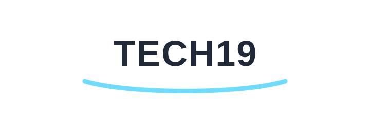
משימת חברה 62
Tech19
Tech19
הכשרה / תעסוקה טכנולוגית
אתיקה ובקרה
הכשרה / תעסוקה טכנולוגית. עוזר לחבר תלמידים ועובדים לעולם הטכנולוגי.
אימות לוגו / شعار الشركة מצאו את הלוגו בפארק. ציירו/תארו אותו בקצרה וקבלו אישור מדריך: ____________________________________________________________
62.1 למה חשוב להכיר מקצועות טכנולוגיים כבר בחטיבה?
لماذا من المهم التعرف على مهن تكنولوجية منذ المرحلة الإعدادية؟
תשובת הצוות / إجابة الفريق: ____________________
ניקוד משימה____אישור מדריך____
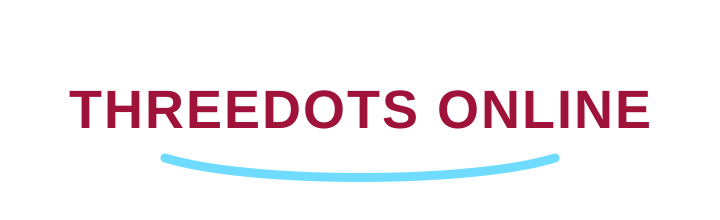
משימת חברה 63
THREEDOTS ONLINE
THREEDOTS ONLINE
דיגיטל / מוצר אונליין
חוויית משתמש
דיגיטל / מוצר אונליין. הערך מגיע כשמחברים טכנולוגיה לצורך אמיתי.
אימות לוגו / شعار الشركة מצאו את הלוגו בפארק. ציירו/תארו אותו בקצרה וקבלו אישור מדריך: ____________________________________________________________
63.1 מה השאלה הכי טובה לשאול על חברה טכנולוגית שלא מכירים?